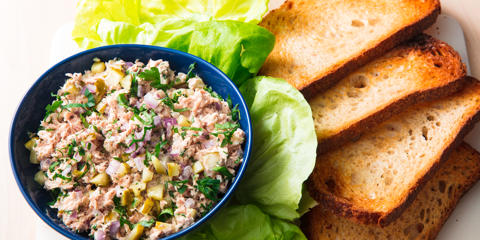

<!DOCTYPE html>

<html lang="en">
  <head>
    <meta charset="UTF-8">
    <title>My First Webpage</title>
  </head>
  </html>
  <body>
    <h1>TUNA SALAD</h1>
    

    <h2>Description</h2>
    <p>A classic tuna salad recipe is an easy lunch and can be made ahead of time for meals throughout the week.</p>
    <p>Perfect for tuna salad sandwiches or creamy tuna melts with some coleslaw on the side!  Whip up a salad or sandwiches or even scoop it into half an avocado for a fancy (and low carb) dish!</p>

    <h3>Ingredients</h3>
        <ul>
            <li>Tuna</li>
            <li>Mayonnaise</li>
            <li>Diced Celery</li>
            <li>Chopped Dill Pickles</li>
            <li>Red Onion</li>
        </ul>


        <h3>Steps</h3>
        <ol>
            <li>Drain flaked tuna and place it into a medium bowl. Use a fork to gently separate the pieces.</li>
            <li>Add the mix-ins per the recipe below.</li>
            <li>Gently fold in the dressing. Season with a little salt and pepper to taste and keep chilled!</li>
            <li>Stir in pasta to make a tuna macaroni salad.</li>
            <li>Cut the carbs and make it a lettuce wrap! Fill lettuce leaves with the mixture or even just top a bed of romaine lettuce.</li>
            <li>Spoon it on a cracker with cheese or fill a wrap with tuna salad and fresh veggies.</li>
        </ol>
</body>
